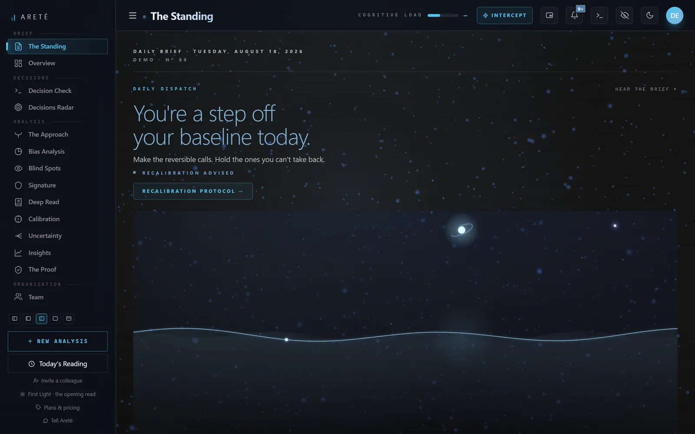
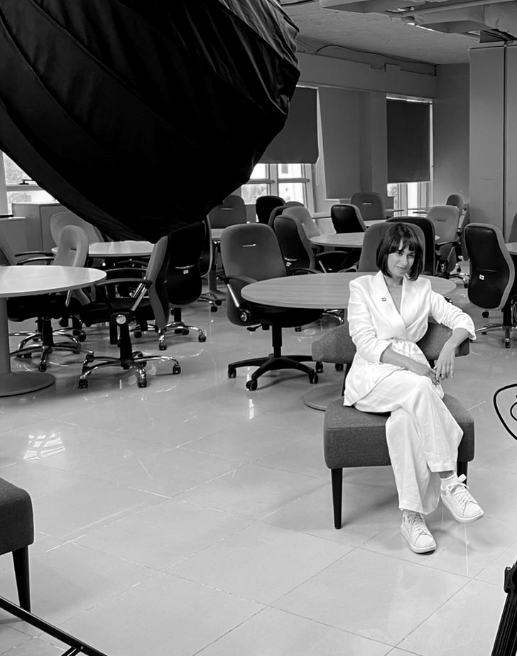

The check engine light for decision-making. A continuous read of cognitive integrity for the people whose calls cannot be undone.
READING YOU · CHANNEL OPEN
The read is free · sixty seconds
Money got the audit. Aviation got the flight recorder. Medicine got the vitals monitor. The mind that runs all of them still decides unmeasured. And you are not equally intelligent every day. You cannot know which day this is from the inside, because degradation does not arrive as fog. It arrives as certainty.
You are not equally intelligent every day. You know this. What you cannot know from the inside is which day this is, because degradation does not arrive as fog. It arrives as certainty: the conviction that this call is obvious, that it cannot wait, that you have seen this before. A compromised state does not feel compromised. That is what makes it expensive. A mistimed acquisition, a wrong senior hire, one irreversible commitment signed in a hot state: any of them costs more than a decade of measurement. And you do not need a boardroom to know the shape of this. Everyone has signed something irreversible on the wrong day: a resignation, a message, a purchase, a promise. The stakes scale; the mechanism does not.
My worst decisions and my best ones felt identical. Identical.
Areté is the instrument for that gap. A sixty-second reading against your own baseline, and a gate before the calls that cannot be undone. It does not tell you what to decide. It tells you who is deciding.
Sixty seconds a day, against your own baseline. Not an average, not a type, not a mood diary.
It does not tell you what to decide. It tells you who is deciding.
Drift never announces itself. It arrives as certainty.
Two minutes of a stranger, read from a cursor alone. It proves one thing: state is visible from the outside.
This page has no permissions, no sensors, no login. Areté has your physiology, your behaviour and your decision record, held against a baseline that is yours alone. What this page just did with a cursor, the instrument does with your decisions. Every day.
Computed in this tab · transmitted nowhere
Take the sixty-second readThe gate stands before the calls that cannot be undone.
Every irreversible decision is signed twice: by a person, and by the state that person is in. Areté reads the second signer, and holds the pen when it must. Press the gate.
Your call, your signature. The gate holds it for a day when your own baseline says you are not the one signing.
See this inside the instrument →An operator may name a practitioner: the coach or advisor who sits beside the reading, by explicit consent.
Signals travel. Answers never do. Enforced in code, not in a promise.
And six more, already written.
No other software can write them, because no other software has measured the judge.
Dashboards show. Areté issues.
A dashboard ends in a chart. Areté ends in a document with consequences.
Six more ship with the protocol. No other software can write them, because no other software has measured the judge.
The live instrument, at work. One operator, one day, three moments.

Sixty seconds with your coffee. The Standing reads you against your own baseline and hands you the day's number.
Live product · demo account · 18 August 2026 · your data never leaves your account
Now try it yourself. This is Areté.
The decision you are carrying right now, given to both machines.
Touch the instrument.
Two signals from your week. Move them. The instrument answers.
What this page shows is the surface. The instrument shows the rest only from inside.
Enter through the sixty-second read →A year of judgment, seen from above. Your record becomes a sky.
The governance
Written for the people who ask where the data lives before they ask what the product does.
Negative results ship too.
The honesty is the product.
For the seats where error compounds · principals · founders · funds · boards · heads of institutions
Areté is priced like the counsel it replaces, not the software it resembles. Terms are set in conversation, after application. The founding cohort enters on different terms: they pay in data and in testimony, and they are named in the validation report if they choose to be. Every application is read personally.
Priced as counsel, not as software. Every operator carries a number stamped on their record from day one. Numbers one to thirty belong to the founding edition, and they are not sold twice. The sixty-second read is free. The instrument is by application.
What institutions call character is largely state.

Areté exists because the most consequential system in any institution is the least examined one. Decisions that move companies, capital and people are signed by minds nobody measures. I watched it at close range: the worst calls in the room were made with the greatest conviction, and nothing flagged them. Not the data. Not the advisors. The failure was never information. It was state.
I studied physics and philosophy at LMU Munich: one taught me what a measurement is, the other what a judgment is. I run my life in five languages, and I know what most software pretends not to: the same mind is not the same mind in each of them, on each day, at each hour. What institutions call character is largely state. It is measurable, it degrades on a rhythm, and every serious organization bets its future on it while refusing to look at it.
So I built the instrument. Not a coach, not a wellness product. It does not flatter and it does not advise. It measures the operator, gates the irreversible, and keeps a record an institution can stand behind. It stands where an honest instrument has always stood: between your state and your signature.
One page. What you decide, and what a wrong call costs. Answered personally.
Not applying? The reading is still yours.
The sixty-second read is open to everyone, free, today. The verdict it produces stays sealed until you claim it with an email; the claim holds a numbered place on the waiting list and starts a record that is yours to keep, export, or erase. The cohort is thirty places. The instrument's door is not.
Take the free read →